Single room with a study desk, 1.2 km from campus in Braamfontein
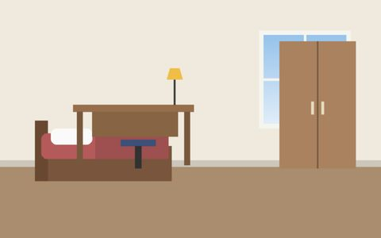
Bright single room with a large window in Hatfield
Budget single room with access to a shared kitchen
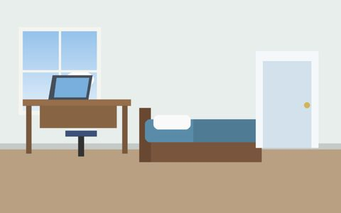
En-suite single room with its own bathroom
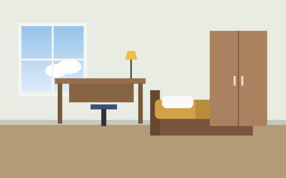
Single room with a study nook and desk lamp
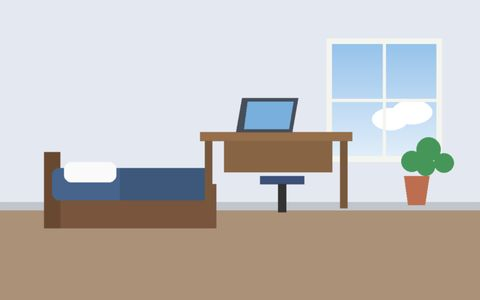
Single room with a built-in wardrobe for storage
Furnished lounge in a two-bedroom shared apartment in Hatfield
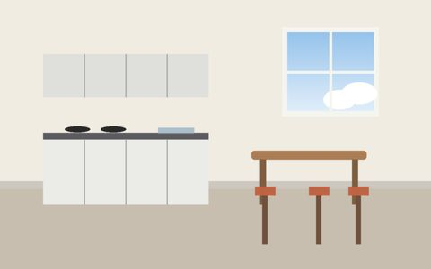
Fitted kitchen shared by two tenants
Three-bedroom shared student house with a garden in Auckland Park
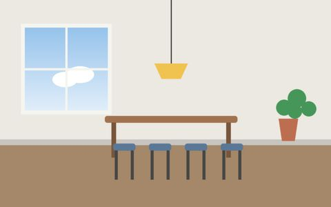
Dining area for housemates in a shared house
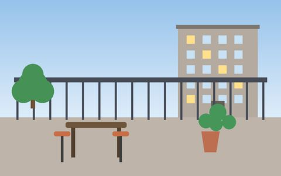
Balcony with seating overlooking the neighbourhood
Studio flat with a kitchenette in Braamfontein
Premium studio with a double bed and gym access
Studio flat bathroom with a private shower
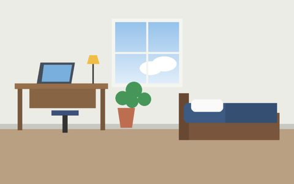
Studio flat with a work desk beside the window
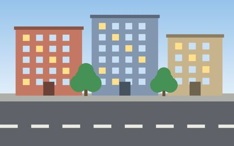
Student housing blocks on a Braamfontein street close to campus
Residential street in the Hatfield student district, Pretoria
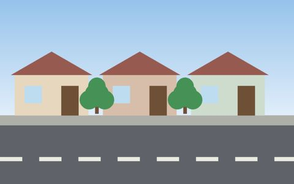
Quiet residential street in Auckland Park
Walkway between student accommodation and the main campus buildings
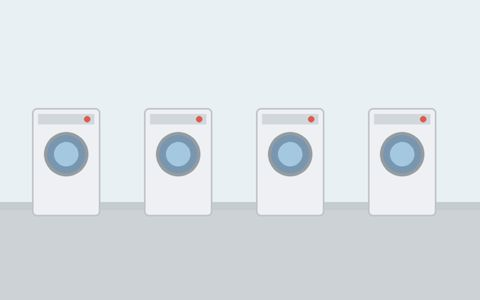
On-site laundry room with washing machines
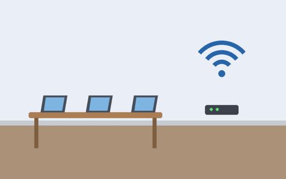
Shared study area with fibre Wi-Fi
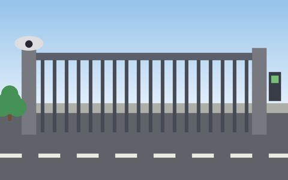
Secure access gate with 24-hour security
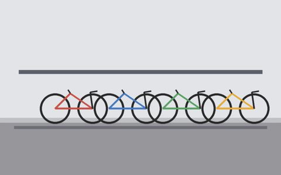
Secure bicycle storage for students who cycle to campus
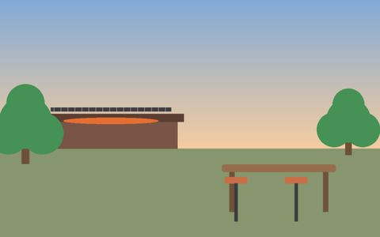
Communal braai area for residents
No photos match your search.
Clear filters
Like what you see?
See the matching listings and prices or send an enquiry for a cost estimate.